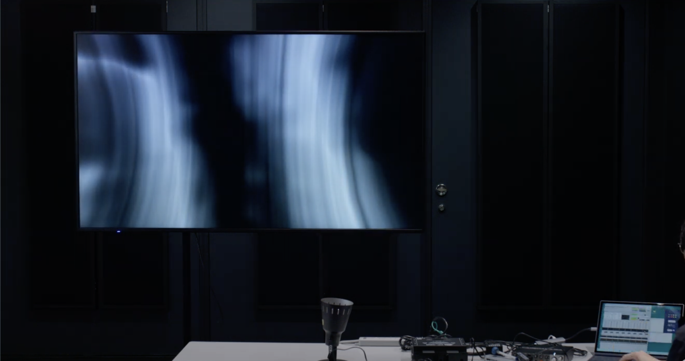
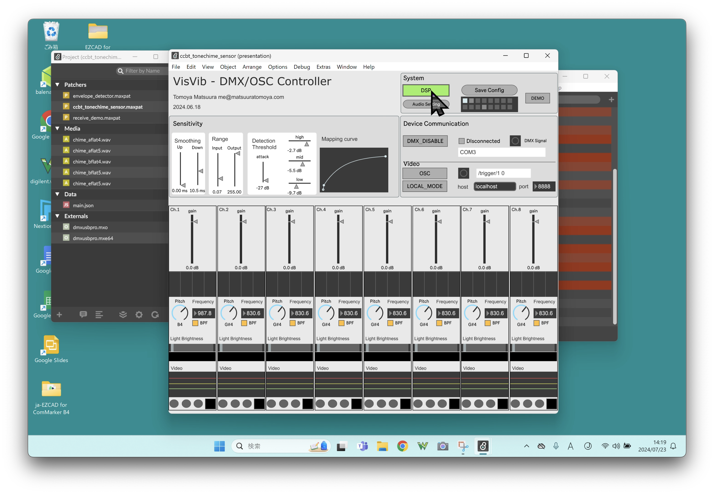
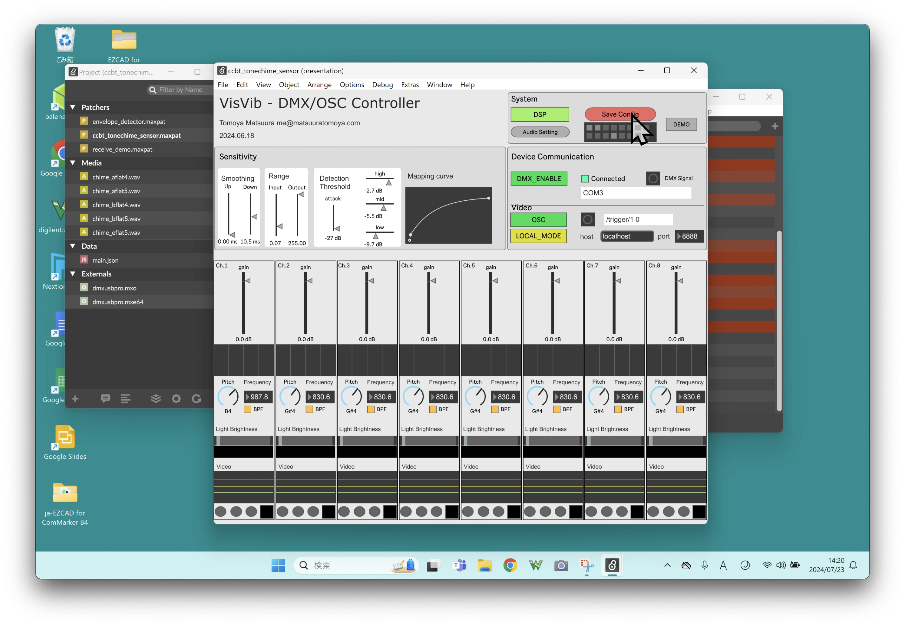
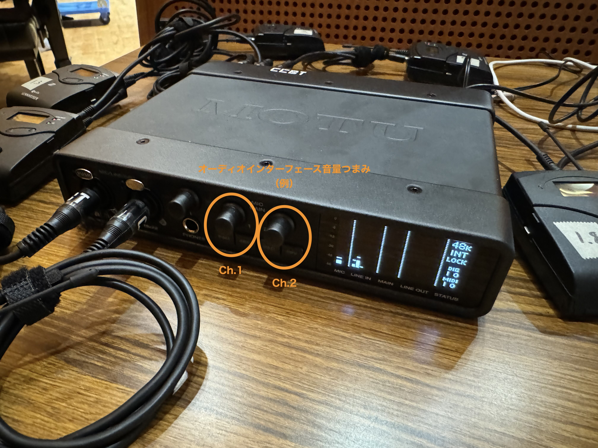
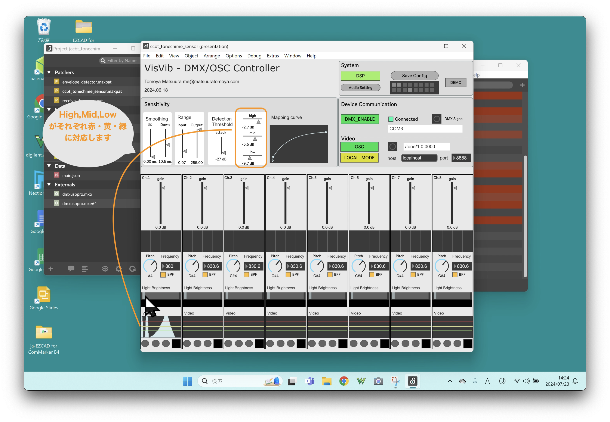

Usage
Practical Usage
Launch the application
First, start the application. The first time you start the application after downloading it, the system may block it from starting, please ignore this and start it.

Double-clicking on the Max Project file named ccbt_tonechime_sensor in the folder of the audio and lighting application will launch the application on Max.

The video application is launched by double-clicking on the application Tonechime_VideoSystem in the video application folder. At this time, if an external display is connected, the video application will automatically appear in full screen. A small control window will appear on the main display. After launching the application, the first step is to configure the connection settings for the audio interface and DMX.

Audio interface settings.

First, click on the “Audio Setting” button in the frame named System in the upper right corner.

A new window will appear, and under DRIVER, the second item from the top, select “ad_portaudio” or “Windows DirectSound” (“Core Audio” for Mac), and under INPUT DEVICE, the third item, select the name of the audio interface you are using. In the third INPUT DEVICE, select the name of the audio interface you are using. Also, set the SAMPLING RATE to 48000. When you are done, close the audio setup window.

Then, if the “DSP” button above “Audio Setting” is gray, click on it so that it turns green.
Set up the lighting
Click on the DMX_DISABLE/DMX_ENABLE button in the “Device Communication” box at the bottom of the System so that it is also green (ENABLE). If the DMX USB PRO is properly connected, the indicator to the right will glow green and the word “Connected” will be displayed.
.
The application automatically detects serial communicating devices connected via USB. If more than one serial device is connected, it will attempt to connect to devices other than DMX USB PRO, so do not connect USB devices that are not relevant to your system.

Click on the “OSC” button so that it is also green and the “LOCAL_MODE” button below it is also yellow.
Note
Turn off “LOCAL_MODE” to synchronize with a video application running on another computer. Enter the IP address of the computer running the video application in the “address” field to the left of “port”.
save configuration

If there are no problems with the connection, click the “Save Config” button in the upper right corner. If the configuration of the connected devices is the same, the next time you launch the application, the current configuration, including the audio interface settings, will be restored automatically.
Note
The parameters are written in the file data/main.json, which can also be edited directly in the JSON data by editing pattrstorage/slots/1/data.
Set tone chime pitch and gain.

In the voice and lighting program, the tone chime pitch to be used is specified in advance by the program, preventing the detection of extraneous noise. In the section in the lower half of the application screen, the pitch and volume of the tone chime can be adjusted.
For each channel, drag the “Pitch” dial to the name of the tone chime pitch you are using. Also, make sure the BPF button on the right is glowing yellow 1.
Note
On the software, the pitch of the black keys is marked in sharp, such as A#4 or D#4, but on the tone chime it is marked in flat, such as B♭4 or E♭4. Also, you can specify the pitch by text input.
Next, set the volume (sensitivity) of the contact microphone. When you hit the tone chime, the volume of the sound will be displayed on the meter where it says gain on the application.
Turn the audio interface's input gain knob up to the right until the meter does not turn red or yellow when you strike the tone chime strongly.
Note
In some audio interfaces, gain can be set only through device driver software. For instance of Ultralite Mk5, gain for Ch3~8, can be set from CueMix 5 software.

If the Peak Excessive Input light comes on at the audio interface side, or if the knob is turned up all the way but the volume is still too low, drag the gain meter on the application to adjust the volume further.
When using multiple tone chimes, adjust the pitch and volume on all channels. Press “Save Config” again to save the settings.
Note
In general, because a wireless transmitter contains preamp, if you connect a contact microphone to the audio interfaces directly, input gain needed to be to set to larger value (about +20~40dB) than the wireless setting. For instance of MOTU UltraLite Mk5 with wired setting, hardware gain should be set to +20dB in CueMix 5 Application, and gain in the Max Application should be set around +12dB as well.
Set Lighting

Configure the lighting settings. First, drag the slider named Light Brightness left and right to check if the brightness of the lights changes. If the brightness does not change after moving it, then there is a problem with the DMX, lighting connection, or dimmer settings in the Setup section.
This Light Brightness slider moves automatically according to the signal from the microphone. It is recommended setting that the slider jumps to right when the tone chime is hit and move to left slowly.
If the Light Brightness does not go all the way to the right when you hit the tone chime hard, adjust the sensitivity by decreasing the slider named Range-Input, which is located at the top, little by little. Conversely, if the slider sticks to the right for a while after you hit the chime, increasing the Range-Input value.
If the lights are flickering without any sound even after you set the correct sensitivity, increase the value of the Smoothing up/down slider.
Settings for video

In the video system, a circle with a color set for each channel changes in size, depending on the volume. The tone chime channel numbers 1-8 are arranged on a grid with the top left channel 1, bottom left channel 2, top right channel 3, bottom channel 4, and so on, with top 7 and bottom 8 at the right end, as shown in the image in the on-screen layout.
The color of the circle for each channel can be set with the color wheel in the settings window of the video application by clicking on the area where the colored rectangles are displayed in the same layout as on the actual screen.

When the tone chime is struck, the video effect of the circle that appears changes in three levels depending on the volume. The level at which the volume is divided into large, medium, and small is set by the sliders High, Mid, and Low in the Detection Threshold.

In the “Video” section at the bottom of the application, you can see the actual volume change and the 3-step division position, so try tapping while changing the volume to find the perfect division point.
If there is a fine response on the video as well as the lighting, try increasing the slider named “attack” in the Detection Threshold.
Before exiting the application, make sure it is working well and press Save Config again.
The settings in the video application will be saved automatically. Click the Exit button in the lower right corner of the screen to exit.
Warning
Exit the video application by clicking the Exit button in the lower right corner of the window, otherwise the information will not be saved. Do not exit with the ❌ button on the native window.
-
When applying the VisVib system to percussion instruments with no sense of pitch, etc., turning off the BPF button may make them more responsive to sound. Note, however, that it will also increase the detection rate of noise. ↩